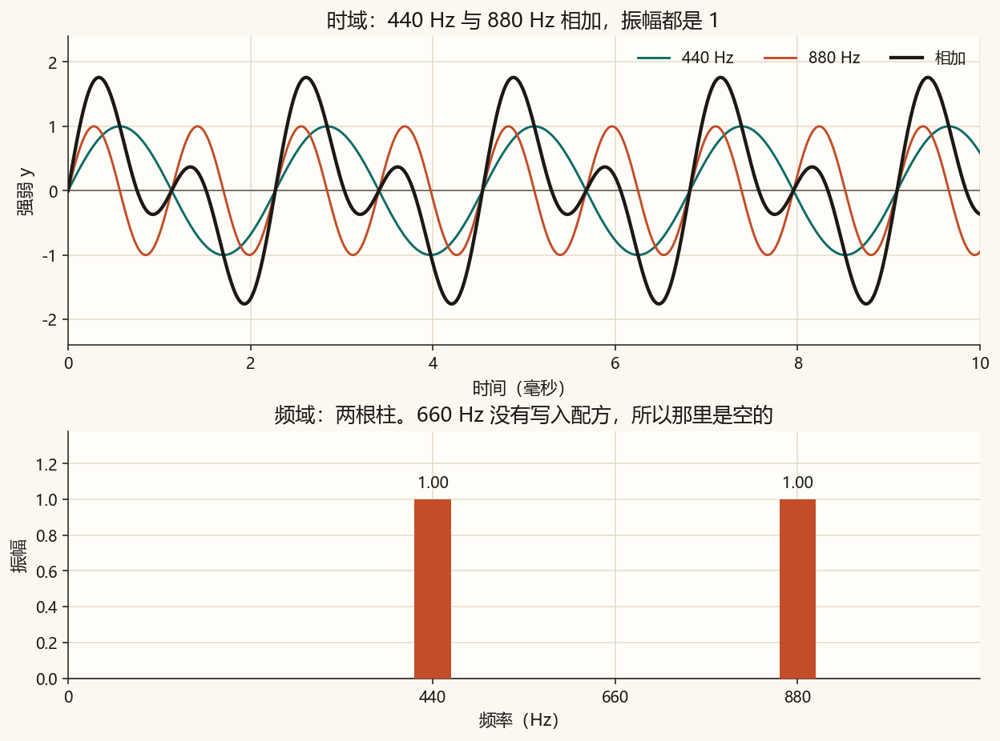
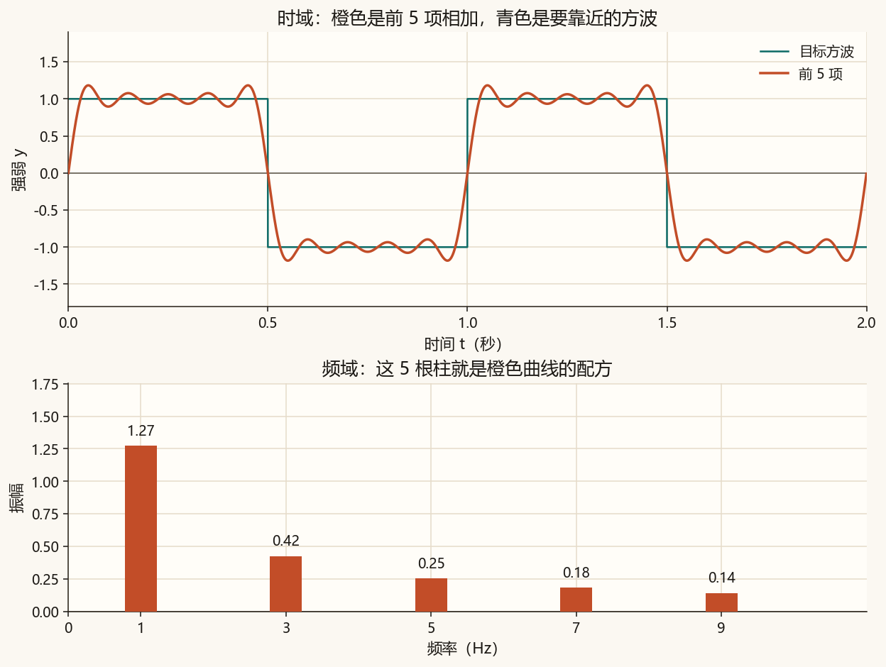
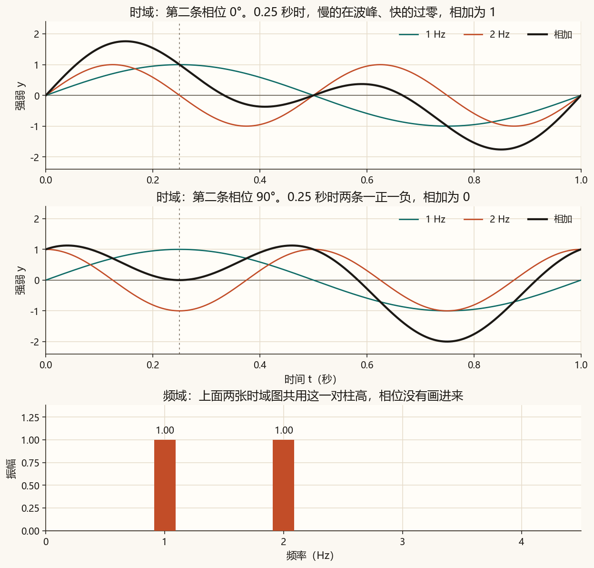
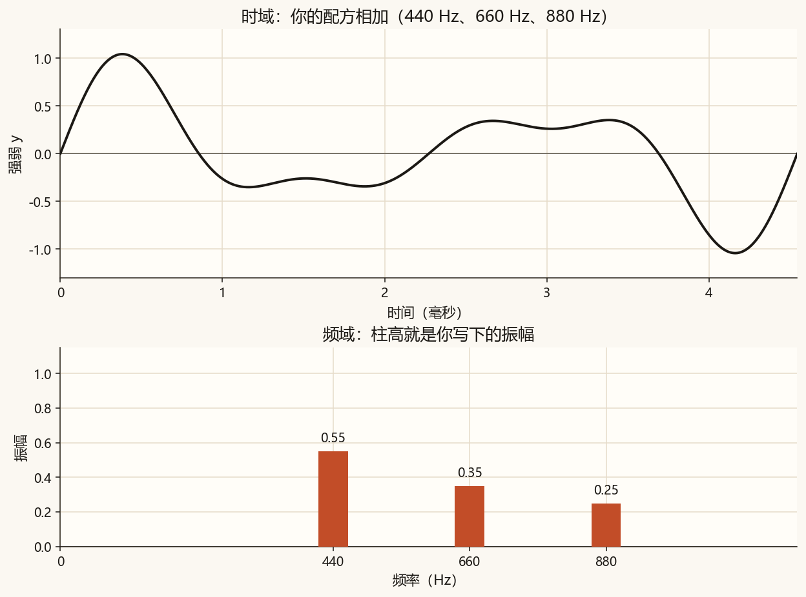

第 3 篇 · 两种看法 · 约 40 分钟
同一段波可以按时间看，也可以按频率看。时域记下每个时刻有多高；频域记下每种快慢有多强。这一篇的柱高直接来自配方，怎样从波形里把配方算出来，放到第 5 篇。
第 0 篇到第 2 篇的图，横轴都是时间，纵轴是这一刻的高度。这种看法叫时域。
第 2 篇的配方还可以换成另一根横轴：频率。每根柱子的位置是一种快慢，高度是这种快慢的振幅。这种看法叫频域，画出来的柱状图叫频谱。第 2 篇图 2-4 先把它叫做配方，从这一篇起按频谱来读。
| 时域 | 频域 | |
|---|---|---|
| 横轴 | 时间 | 频率 |
| 纵轴 | 这一刻的高度 | 这个频率的振幅 |
| 一条纯音 | 一条正弦 | 一根柱 |
| 440 加 880 | 两条扭在一起的曲线 | 440 和 880 两根柱 |
频谱上的一根柱，就是配方里的一条纯音。柱的位置是频率，柱的高度就是第 0 篇里的振幅 A。这一篇先不把高度换成对数。
它不表示「在 440 秒发生了什么」。横轴已经换成频率，440 的意思是每秒来回 440 次。
y(t) = A₁ sin(2π f₁ t + φ₁) + A₂ sin(2π f₂ t + φ₂) + …
左边是时域：每个时刻把各条正弦的高度加起来。频谱这一篇只抄下每一对 (f, A)。相位 φ 先留在时域里，不画进柱子。

算例。 把频率放慢成 1 Hz 和 2 Hz，振幅仍是 1，相位都是 0。t = 0.25 秒时，慢的那条高度是 1，快的那条高度是 0，相加是 1。频谱上仍是两根高度为 1 的柱。时域里的这一个高度，并不会变成柱高。
第 2 篇用奇数倍把方波拼出来。那些倍数和振幅，排到频率轴上，就是这段橙色曲线的频谱。

这里有两个不同的「高度」。方波平台在时域里是 1 和 −1。基频那根柱大约是 1.27，它是这条正弦自己的振幅，不是平台的高度。1.27 来自 4/π，第 2 篇已经见过。
振幅决定柱高。相位决定这条正弦从哪里起跳。只改相位时，配方里的 (f, A) 不变，频谱就不变；每个时刻的高度会变，时域曲线就变了。

算例。 第二条相位改成 90° 以后，t = 0 秒：第一条高度 0，第二条高度 1，相加 1。t = 0.25 秒：第一条高度 1，第二条高度 −1，相加 0。两根柱的高度都还是 1。
只留下柱高，还原不出原来的波形。相位要单独画，放到第 5 篇。这一篇先记住：频谱上的高度是振幅。
上图是时域。两条相加时纵轴留到 ±2.5，避免相加后的波峰被裁掉；方波那一档纵轴收到 ±1.7，平台仍在 ±1 附近。下图是频域，柱高和时域共用同一份配方。先看「两条相加」，再把相位拖到 90°：上图变了，下图两根柱不动。方波那一档的柱高约 1.27，比纯音的柱更高。
相位滑块只改变「两条相加」里的第二条。另外两档的相位都是 0°。
图 3-2 的振幅是 1，下面的声音把两根柱一起缩到 0.3，免得太响。缩完以后，440 Hz 和 880 Hz 的柱仍然一样高。
440 Hz + 880 Hz，相位都是 0°。
还是这两根柱，第二条相位改成 90°。音高仍是 440 和 880。柱状图记录的是这两个音有多强，没有记录相位。
方波的声音把基频放到 220 Hz，否则 1 Hz 听不见。五项分别是 220、660、1100、1540、1980 Hz，高低比例和图 3-3 相同。
脚本按一组 (频率, 振幅) 同时画出时域曲线和频谱柱。核心就是把配方加起来：
def synthesize(t, tones, phases=None):
y = np.zeros_like(np.asarray(t, dtype=float), dtype=float)
if phases is None:
phases = np.zeros(len(tones))
for (frequency, amplitude), phase in zip(tones, phases):
if amplitude == 0 or frequency <= 0:
continue
y = y + amplitude * np.sin(2 * np.pi * frequency * t + phase)
return y
tones = [(440, 1.0), (880, 1.0)] # 频域里的两根柱
y = synthesize(t, tones) # 时域里的一条曲线完整脚本在 code/ch03_spectrum.py。课文图不读文件顶部的三个数。
python code/ch03_spectrum.py终端里应出现「自检通过」，以及「方波基频柱高约为 1.273」。课文图是 ch03_two.png、ch03_phase.png、ch03_square.png。ch03_mine.png 和 ch03_mine.wav 只跟随顶部的三组频率和振幅。
若终端中文是乱码，先执行 chcp 65001。图和 wav 照样会保存。
code/ch03_spectrum.py，把 A2 = 0.35 改成 0，运行。打开 ch03_mine.png：660 Hz 那根柱消失，上图的曲线也不再含这个音。刷新本页听 ch03_mine.wav。A2 改回 0.35，把 F2 = 660.0 改成 550.0，再运行。柱子改长在 550 Hz，时域曲线跟着变。F2 改回 660.0，再运行一次。默认的三根柱是 440 Hz 高 0.55、660 Hz 高 0.35、880 Hz 高 0.25。
你的声音：
振幅请用 0 到 1，频率请用 0 或正数。写成 0 就关掉那根柱。两根柱的频率请错开，否则会叠在同一个位置。频率不低于采样率的一半时，图上仍画这根柱，声音里会去掉它，终端会提示。
时域横轴是时间，频域横轴是频率。这份配方没有 660 Hz，那里没有柱，振幅是 0。440 和 880 各有一根高度为 1 的柱。
高度从 1 变成 0：第一条是 1，第二条是 −1。两根柱仍是 1 和 1。相位改的是时域曲线，这一篇的柱高只记振幅。
大约 1.27，也就是 4/π。平台高度 1 是时域里方波的目标高度。1.27 是基频这条正弦的振幅。3 倍那根柱大约是 0.42，约是 1.27 的三分之一。
下一篇看周期信号：这些系数怎样用「和标准正弦有多齐」算出来，方波为什么只留下奇数倍，以及拐角外侧那一截过冲。